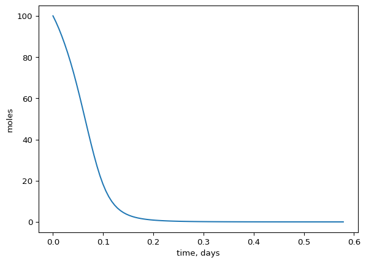
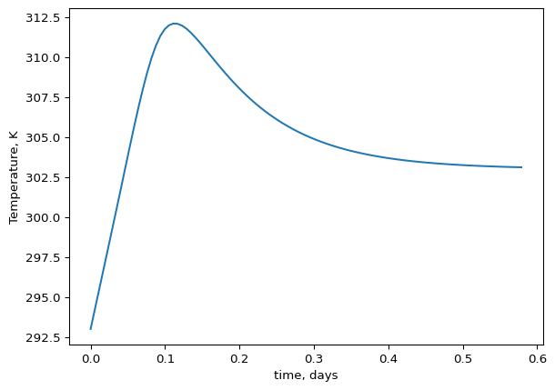
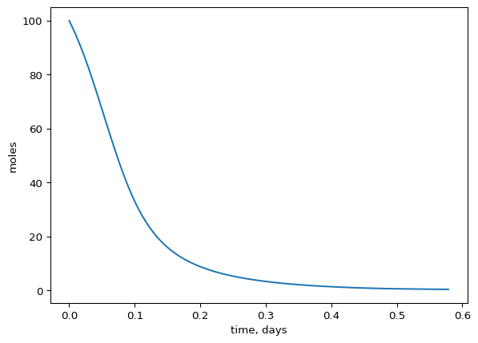
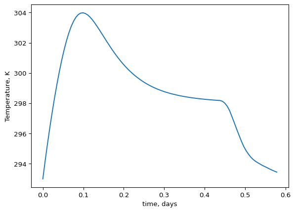
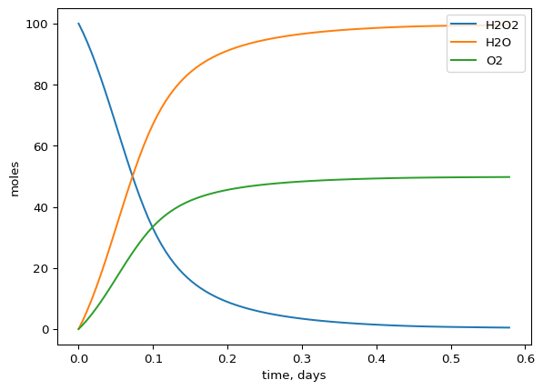
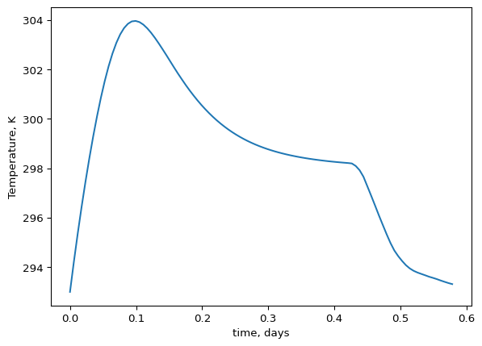
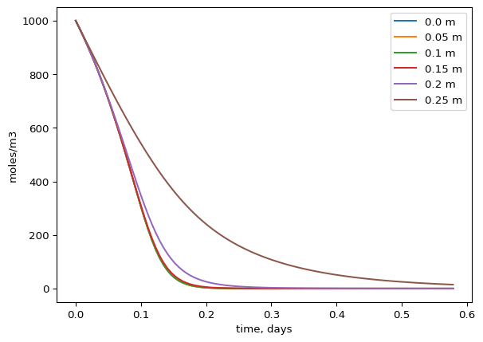
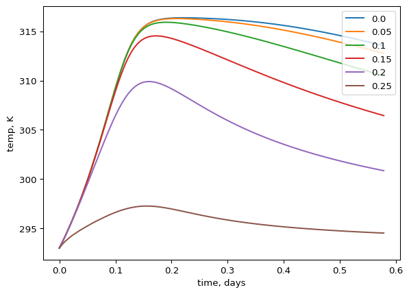

Exercises - Coupled mass and heat transfer
- Decomposition of \(2H_{2}O_{2} \rightarrow 2H_{2}O + O_{2}\) is an exothermic reaction that occurs in water. The reaction takes place in a batch reactor and follows first order kinetics. The rate constant is temperature dependent like this:
\[k(T) = A \times exp(-\frac{E_{a}}{RT})\]
The batch reactor is cooled by a cooling jacket with ambient water temperature \(T_c\) of 20 deg C. The surface area between the cooling jacket and the reactor is 1 \(m^2\). A stirrer ensures that the reactor is perfectly mixed. Use the parameter values below:
\[ E_{a} = 8 \times 10^{4} \; J/mol \]
\[ A = 1 \times 10^{10} \; s^{-1} \]
\[ R = 8.314\ \mathrm{J/(mol \cdot K)} \]
\[ \Delta H_{rxn} = -98 \cdot 10^3\ \mathrm{J/mol} \]
\[ C_{p,water}= 4180\ \mathrm{J/(L \cdot K)} \]
\[ \rho = 1000 \; kg/m^{3} \]
\[ q_{stirrer} = 5000 \; J/(s \cdot m^{3}) \]
\[ T_{0} = 293 \; K \]
The reactor working volume is 100 L and with an initial concentration of 1 mol/L of \(H_{2}O_{2}\) in an aqueous solution. The heat from the reactor is removed with an overall heat transfer coefficient of
\[ U = 50\; J/(s \cdot m^{2} \cdot K) \]
A) Write the governing equation for heat and mass in the reactor using a 0D model.
Solution: Since the reactor is mixed we can use the approach for 0D directly or we could use the spatial governing equations and reduce to a 0D model.
\[ \rho \cdot C_p \left( \frac{\partial T}{\partial t} + v_x \frac{\partial T}{\partial x} + v_y \frac{\partial T}{\partial y} + v_z \frac{\partial T}{\partial z} \right) = k \left( \frac{\partial^2 T}{\partial x^2} + \frac{\partial^2 T}{\partial y^2} + \frac{\partial^2 T}{\partial z^2} \right) + S \]
Then we cross out terms. There is no in or outflow (batch reactor) and it is perfectly mixed (no heat conduction or unidirectional advection). And we are left with only S. Cp is given in units of J/(L K), but it is water and we know 1 L is equivalent to 1 kg. Therefore we will use Cp in units of J/(kg K).
\[ \rho \cdot C_p \frac{\partial T}{\partial t} = S \]
The S (source) is generated and removed heat combined. Lets check units here:
\[ kg/m3 \cdot J/(kg K) \cdot K/s = J/(m3 \cdot s) \]
So S has units per volume currently. We will deal with that in a moment. We know the reaction and the stirrer produces heat and that heat is removed through a cooling jacket. That is three different processes that S currently represents and we need to be explicit about those processes now. We are given U, which is an overall heat transfer coefficient that is really made up of other conductivity and transfer coefficients. We are told the heat is lost across the cooling jacket, which has another temperature than the reactor solution. We should now realize that this temperature gradient drives the heat transfer and think newtons law of cooling! We only care about the overall heat transfer coefficient and we don’t need to know h and k as it is all combined in U. We can use newtons law of cooling for the heat loss across the cooling jacket. We also have energy added from the stirrer, which has units of J/(m3 s) already. Finally we have the heat generated from the reaction. The reaction rate r has units of mol/(m3 s) and when we multiply that with the enthalpy of reaction (J/mol) we get J/(m3 s) as well. Perfect, all terms in S have the same units now. Or do they?
Wait, we have U in units of J/(s m2 K) and the temperature difference in K. When we multiply those two we get J/(s m2). So this mechanism is not related to volume, but the surface area of the reactor, but we need it to be converted to J/(s * m3) to match the other terms. The m2 refers to the surface area between the cooling jacket and reactor solution. We can convert U to J/(s m3) by multiplying by the surface area and dividing by the volume of the reactor.
Therefore we can rewrite S as a combination of the heat of reaction and heat loss through the cooling jacket.
\[ \rho \cdot C_p \frac{\partial T}{\partial t} = Q_\mathrm{gen} - Q_\mathrm{removal} = -\Delta H_{rxn}\, k \cdot C_{A} + q_{stirrer} - U \cdot A_{jacket} \cdot (T - T_c)/V \]
Finally we can multiply everything by the volume to get the energy balance on the whole reactor rather than pr volume and we can also divide by rho * Cp to isolate dTdt, which is what we are really after! Lets do that
\[ \frac{\partial T}{\partial t} = \frac{-\Delta H_{rxn}\, k \cdot C_{A} \cdot V + q_{stirrer} \cdot V - U \cdot A_{jacket} \cdot (T - T_c)}{\rho \cdot C_p \cdot V} \]
Simplifying a bit more and we get the final governing equation for the heat balance:
\[ \frac{\partial T}{\partial t} = \frac{-\Delta H_{rxn}\, k \cdot C_{A} + q_{stirrer}}{\rho \cdot C_p} - \frac{U \cdot A_{jacket} \cdot (T - T_c)}{\rho \cdot C_p \cdot V} \]
The mass or mole conservation equation is simple and we can remove most terms and arrive at:
\[ \frac{\partial C_A}{\partial t} = -r \]
Where \(r\) is the reaction which converts the \(H_{2}O_{2}\) to the products.
\[ \frac{\partial C_A}{\partial t} = -k \cdot C_{A} \]
Getting to a mass/mole balance instead of a concentration balance (if we want that?), we simply multiply by V on both sides. Also we should not use \(\partial\) because there is no spatial variation!
\[ \frac{dN}{dt} = -k \cdot C_{A} \cdot V \]
Remember that for both the mass and heat balance we could have kept as pr. volume instead of for the whole reactor.
B) Setup the model in python and try to run it. The reaction product should not exceed 305 K. try to accomplish that by adjusting the overall mass transfer coefficient (U). How could the over all mass transfer coefficient be increased in practice?
import numpy as np
from scipy.integrate import solve_ivp
import matplotlib.pyplot as plt
# define constants
T0 = 293 # K
T_c = 293 # K
c0 = 1000 # mol/m3
Ea = 8*10**4 # J/mol
A = 1e10 # s^-1
Delta_H = -98 * 10**3 # J/mol
q_stirrer = 5000 # J/(s*m3)
R = 8.314 # J/(mol*K)
V = 0.100 # m3
U = 0.5* 10**2 # J/(s*m2*K) # increase to 100 J/(s*K) to get below 305 K
A_jacket = 1 # m2
Cp = 4180 # J/(kg*K)
rho = 1000 # kg/m3
# It is easier to use moles rather than mass when we have c0 in mole/m3 already.
# but this is up to the user.
n0 = c0 * V
tmax = 50000
y0 = np.array([n0, T0])
def rates(t, y, T_c, Ea, A, R, V, U, Cp, rho, q_stirrer, Delta_H, A_jacket):
# extracting derivatives to make it more transparant what is going on
n = y[0]
T = y[1]
c = n/V
# the rate constant depends on the state variable T
k = A * np.exp(-Ea/(R*T)) # 1/s
# reaction rate
ra = -k * c # moles/(m3 * s)
# batch reactor has only reaction in the mass balance
dndt = ra * V # for whole tank (multiplying by V) # moles/s
# energy balance
Q_rxn_total = Delta_H * ra * V # for whole tank, J/s
Q_stirrer_total = q_stirrer * V # J/s
Q_loss_total = U * A_jacket * (T - T_c) # J/s
m = V * rho # total mass of reactor solution
# Heat balance
dTdt = (Q_rxn_total + Q_stirrer_total - Q_loss_total)/(m * Cp) #
# putting together deriviatives in a 1D-array.
dydt = np.array([dndt, dTdt])
return dydt
t_span = [0, tmax]
sol = solve_ivp(rates, t_span, y0 = y0, method = 'BDF', t_eval = np.linspace(0, tmax, 100), args = (T_c, Ea, A, R, V, U, Cp, rho, q_stirrer, Delta_H, A_jacket))
plt.ioff()
plt.plot(sol.t/(60*60*24), sol.y[0])
plt.xlabel('time, days')
plt.ylabel('moles')
plt.show()
plt.ioff()
plt.plot(sol.t/(60*60*24), sol.y[1])
plt.xlabel('time, days')
plt.ylabel('Temperature, K')
plt.show()
# increasing U to 10**3 reduces the temperature sufficiently to keep the reaction product stable

C) There is no reason to keep the stirrer running after the reaction is complete. Implement code that turns of the stirrer after the reaction is 99% complete. Does it have any effect on the temperature?
import numpy as np
from scipy.integrate import solve_ivp
import matplotlib.pyplot as plt
# define constants
T0 = 293 # K
T_c = 293 # K
c0 = 1000 # mol/m3
Ea = 8*10**4 # J/mol
A = 1e10 # s^-1
Delta_H = -98 * 10**3 # J/mol
q_stirrer = 5000 # J/(s*m3)
R = 8.314 # J/(mol*K)
V = 0.100 # m3
U = 1*10**2 # J/(s*m2*K)
A_jacket = 1 # m2
Cp = 4180 # J/(kg*K)
rho = 1000 # kg/m3
n0 = c0 * V
tmax = 50000
y0 = np.array([n0, T0])
# define start conc as variable to pass to function
start_moles = y0[0]
def rates(t, y, T_c, Ea, A, R, V, U, Cp, rho, q_stirrer, A_jacket, start_moles):
# extracting derivatives to make it more transparant what is going on
n = y[0]
T = y[1]
c = n/V
# turn of the stirrer if reaction is 99% complete.
if n < 0.01 * start_moles:
q_stirrer = 0
# the rate constant depends on the state variable T
k = A * np.exp(-Ea/(R*T))
# reaction rate
ra = -k * c #
# batch reactor has only reaction in the mass balance
dndt = ra * V # for whole tank (multiplying by V)
# energy balance
Q_rxn_total = Delta_H * ra * V # for whole tank
Q_stirrer_total = q_stirrer * V
Q_loss_total = U * A_jacket * (T - T_c)
m = V * rho # total mass of reactor solution
# Heat balance
dTdt = (Q_rxn_total + Q_stirrer_total - Q_loss_total)/(m * Cp) #
# putting together deriviatives in an array.
dydt = np.array([dndt, dTdt])
return dydt
t_span = [0, tmax]
sol = solve_ivp(rates, t_span, y0 = y0, method = 'BDF', t_eval = np.linspace(0, tmax, 100), args = (T_c, Ea, A, R, V, U, Cp, rho, q_stirrer, A_jacket, start_moles))
plt.ioff()
plt.plot(sol.t/(60*60*24), sol.y[0])
plt.xlabel('time, days')
plt.ylabel('moles')
plt.show()
plt.ioff()
plt.plot(sol.t/(60*60*24), sol.y[1])
plt.xlabel('time, days')
plt.ylabel('Temperature, K')
plt.show()

D) Try to add the products to the rates function as well and plot it together with the reactant
import numpy as np
from scipy.integrate import solve_ivp
import matplotlib.pyplot as plt
# define constants
T0 = 293 # K
T_c = 293 # K
# changing names here because we have several concentrations now.
cA0 = 1000 # mol/m3
cB0 = 0 # mol/m3 (H2O)
cC0 = 0 # mol/m3, oxygen
Ea = 8*10**4 # J/mol
A = 1e10 # s^-1
Delta_H = -98 * 10**3 # J/mol
q_stirrer = 5000 # J/(s*m3)
R = 8.314 # J/(mol*K)
V = 0.100 # m3
U = 1*10**2 # J/(s*m2*K)
A_jacket = 1 # m2
Cp = 4180 # J/(kg*K)
rho = 1000 # kg/m3
nA0 = cA0 * V
nB0 = cB0 * V
nC0 = cC0 * V
tmax = 50000
y0 = np.array([nA0, nB0, nC0, T0])
# define start conc of reactant as variable to pass to function
start_moles = y0[0]
def rates(t, y, T_c, Ea, A, R, V, U, Cp, rho, q_stirrer, A_jacket, start_moles):
# extracting derivatives to make it more transparant what is going on
nA = y[0]
nB = y[1]
nC = y[2]
T = y[3]
cA = nA/V
# turn of the stirrer if reaction is 99% complete.
if nA < 0.01 * start_moles:
q_stirrer = 0
# the rate constant depends on the state variable T
k = A * np.exp(-Ea/(R*T))
# reaction rate
ra = -k*cA
rb = -ra # assuming stoichiometry of 1:1 for A to B (looks like it from the reaction)
rc = -ra/2 # only 1 mole O2 produced per mole H2O2 reacted.
# batch reactor has only reaction in the mass balance
dNAdt = ra * V
dNBdt = rb * V
dNCdt = rc * V
# energy balance
Q_rxn_total = Delta_H * ra * V # for whole tank, J/s
Q_stirrer_total = q_stirrer * V # for the whole tank, J/s
Q_loss_total = U * A_jacket * (T - T_c) # for the whole tank, J/s
m = V * rho # total mass of reactor solution
# Heat balance
dTdt = (Q_rxn_total + Q_stirrer_total - Q_loss_total)/(m * Cp) #
# putting together derivatives in an array.
dydt = np.array([dNAdt, dNBdt, dNCdt, dTdt])
return dydt
t_span = [0, tmax]
sol = solve_ivp(rates, t_span, y0 = y0, method = 'BDF', t_eval = np.linspace(0, tmax, 100),
args = (T_c, Ea, A, R, V, U, Cp, rho, q_stirrer, A_jacket, start_moles))
plt.ioff()
plt.plot(sol.t/(60*60*24), sol.y[0], label = "H2O2")
plt.plot(sol.t/(60*60*24), sol.y[1], label = "H2O")
plt.plot(sol.t/(60*60*24), sol.y[2], label = "O2")
plt.legend(loc = 1)
plt.xlabel('time, days')
plt.ylabel('moles')
plt.show()
plt.ioff()
plt.plot(sol.t/(60*60*24), sol.y[3])
plt.xlabel('time, days')
plt.ylabel('Temperature, K')
plt.show()

E) Consider how you could change this problem (in part A and B) into a 1D model?
Solution: We would have to first turn of the mixer to not have a homogeneous solution. With the mixer turned off, transport of heat and mass is through heat conduction and mass diffusion only, because there is not advective flow (batch reactor). Next we need to specify in which dimension we want diffusion and conduction to occur and which dimension we still assume homogeneity. We could for example imagine that heat is transferred out of the tank from the side walls where the cooling jacket is and the reactant is still added evenly to the whole reactor to start with. We would also assume that heat and mass is uniform along the vertical dimension (otherwise it would be a2D problem). Lets call the horizontal dimension r (for radial dimension). Typically a reactor is circular and we would therefore pick cylindrical coordinates. Had we focused on the vertical dimension instead, then we could pick rectangular coordinates even though the tank is circular.
Boundary conditions: For the heat balance we could assume Robin or Diriclet boundary condition at the wall where heat is removed using Newtons law. In the middle there would be Neumann boundary conditions, because we have symmetry across the centerline (that means our indexing would start from the center of the tank). For the mass balance, there would be no flux across the side wall and symmetry in middle, - so two neumann boundary conditions with flux = 0.
F) Difficult exercise: Make a 1D model based on the 0D model developed already. You can assume the following. The model will be along the horizontal (radial) dimension in the reactor and with heat transfer through the side walls due to a cooling jacket. Keep the parameters from the 0D exercise. The diameter of the tank is 0.5 meter and still contains 100 L working volume. The initial concentration everywhere is similar to the 0D problem (1 mole/L).
import matplotlib.pyplot as plt
import numpy as np
from scipy.integrate import solve_ivp
# constants
T0 = 293 # K
T_c = 293 # K
c0 = 1000 # mol/m3
Ea = 8*10**4 # J/mol
A = 1*10**10 # s^-1
Delta_H = -98 * 10**3 # J/mol
R = 8.314 # J/(mol*K)
V = 0.100 # m3
U = 0.5* 10**2 # J/(s*m2*K) #
Cp = 4180 # CP of water: J/(kg*K)
rho = 1000 # kg/m3
# We turn of the mixer and the transport of mass and heat is
# from conduction and diffusion. Things are not homogenous anymore.
D = 2.0 * 10**(-9) # m2/s
# we pick cylindrical coordinates (cylindrical tank) and assume symmetry
# in the middle. This is like modelling half of the reactor,
# which is all we need because the same stuff goes on in the other
# half due to symmetry.
diam = 0.5 # diameter, m
radius = diam/2 # radius of tank, m
dr = 0.01 # space step size, m
r_grid = np.arange(0, radius + dr, dr) # our grid positions in the r dimension
# (horizontal or radial when we are in a cylinder tank)
# thermal conductivity of water is found online:
k_heat = 0.6 # J/(s * m * K)
# we make our 1D grids for concentration and temperature
c0_1D = np.zeros(len(r_grid))
# just keep concentration here when we work with 1D model
c0_1D[:] = c0
# Temperature is the same everywhere to start with
T0_1D = np.zeros(len(r_grid))
T0_1D[:] = T0
y0 = np.concatenate([c0_1D, T0_1D])
tmax = 50000
def rates(t, y, T_c, Ea, A, R, U, Cp, rho, Delta_H, r_grid, dr, k_heat):
# number of grid points
n = len(r_grid)
# make arrays to hold derivatives
dcdt = np.zeros(n)
dTdt = np.zeros(n)
# extracting state variables from y to make it more transparent what is going on
c = y[:n]
T = y[n:]
# the rate constant depends on the state variable T.
# vectorized calculations below
k = A * np.exp(-Ea/(R*T))
# reaction rate
r = k * c # moles/(m3*s), keep in per volume (1D model)
# energy from reaction occurs everywhere
q_rxn = -Delta_H * r # J/(m3/s) , keep in per volume (1D model)
# Neumann BCs for mass at edge because we have no mass flux over the wall
dcdt[-1] = D * (c[-2] - 2*c[-1] + c[-2])/dr**2 - r[-1]
# At center we have symmetry, so there is no change in concentration over
# the centerline. This is the same as there is no flux!
# So it is also a neumann BC with flux = 0. We removed the 1/r * dc/dr part
# because we 1/r = inifinity and dc/dr = 0. We choose to remove it
# but in reality we make a small, but insignificant error when we do it
dcdt[0] = D * (c[1] - 2*c[0] + c[1])/dr**2 - r[0]
# Neumann BC for heat in the middle (symmetry) with flux = 0
# (same argument as for mass). We removed the 1/r * dT/dr part
# because we 1/r = inifinity and dT/dr = 0. We choose to remove it
# but in reality we make a small, but insignificant error when we do it
dTdt[0] = k_heat/(Cp*rho) * (T[1] - 2*T[0] + T[1])/dr**2 + q_rxn[0]/(Cp*rho)
# Robin BC at wall side where we have the cooling jacket
# Use fouriers law for the heat flux: q = -k_heat * dT/dr.
# unit of flux is: J/(s*m*K) * K/m = J/(s*m2).
# We equate that to newtons law of cooling at the wall q = U * (T-T_jack)
# unit is J/(s * m2 * K) * K = J/(s * m2): using central difference for
# discretization of dT/dr at the wall, will give us a ghost point outside
# the wall:
# q = -k_heat * dT/dr = U * (T[-1] - T_c): -k_heat * (Tghost - T[-2])/2*dr =
# U * (T[-1] - T_c).
# Isolate ghost point:
Tghost = T[-2] - 2*(dr * U)/k_heat * (T[-1] - T_c)
# unit of TGhost should be deg C: lets check
# K - (m * J/(s*m2*K)) * s*m*K/J * K = K - J/(s * m * K) * s*m* K/J * K
# that gets us to K = K - K, which is all good.
# cylindrical coordinates has the extra 1/r * dT/dr in the governing equation
# Remember that 1/r is not 1/radius of cylinder. It is 1/r at the each node
dTdt[-1] = k_heat/(Cp*rho) * ((T[-2] - 2*T[-1] + Tghost)/dr**2 + 1/r_grid[-1] * (Tghost - T[-2])/(2*dr)) + q_rxn[-1]/(Cp*rho)
# we did not use that extra 1/r * dT/dr term at r = 0 because it would lead
# to division by zero and dT/dr = 0 there. This gets us in trouble.
# For the Neumann BC at dcdt[-1], the 1/r * dT/dr was
# also left out because discretizing dT/dr at boundary with no flux would be:
# dT/dr = (T[1] - T[-1])/(2*dr) = 0, so that term would be zero anyway.
for i in range(1, n-1):
# cylindrical coordinates has the extra 1/r * dT/dr (or 1/r * dc/dr)
# in the governing equation for the diffusion part.
dcdt[i] = D * ((c[i-1] - 2*c[i] + c[i+1])/dr**2 + 1/r_grid[i] * (c[i+1] - c[i-1])/(2*dr)) - r[i]
dTdt[i] = k_heat/(Cp*rho) * ((T[i-1] - 2*T[i] + T[i+1])/dr**2 + 1/r_grid[i] * (T[i+1] - T[i-1])/(2*dr)) + q_rxn[i]/(Cp*rho)
return np.concatenate([dcdt, dTdt])
t_span = [0, tmax]
sol = solve_ivp(rates, t_span = t_span, y0 = y0, method = 'BDF',
t_eval = np.linspace(0, tmax, 100),
args = (T_c, Ea, A, R, U, Cp, rho, Delta_H, r_grid, dr, k_heat))
conc = sol.y[:len(r_grid),:]
temp = sol.y[len(r_grid):,:]
for i in range(0, len(conc), 5):
plt.plot(sol.t/(60*60*24), conc[i, :], label = f'{i * dr} m')
plt.ylabel('moles/m3')
plt.xlabel('time, days')
plt.legend(loc = 1)
plt.show()
for i in range(0, len(temp), 5):
plt.plot(sol.t/(60*60*24), temp[i,:], label = f'{i * dr}')
plt.ylabel('temp, K')
plt.xlabel('time, days')
plt.legend(loc = 1)
plt.show()
